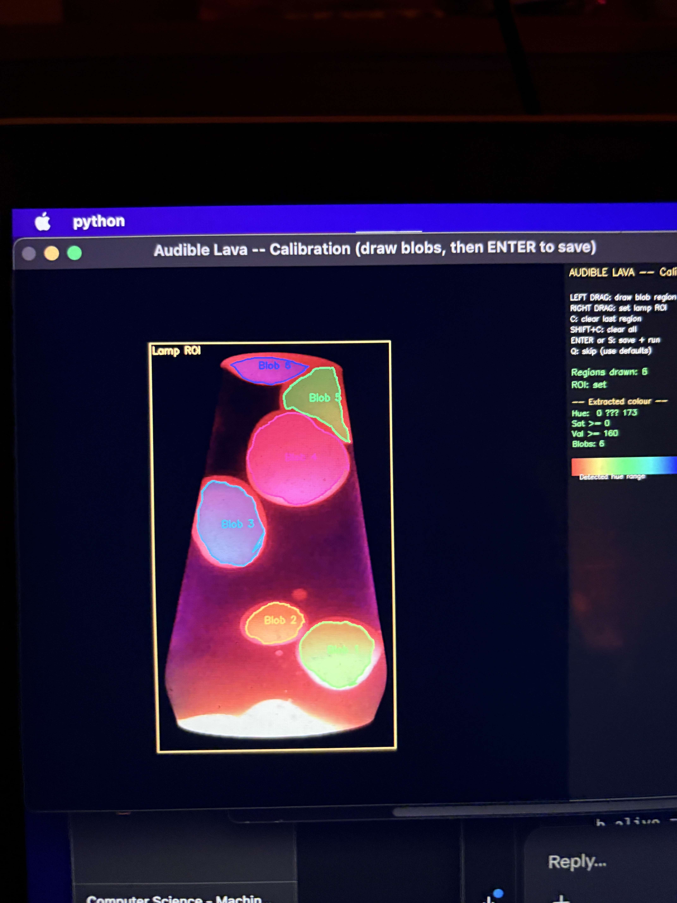

Overview
A lava lamp — a physical, analogue, thermodynamic system — is filmed continuously and translated, in real time, into continuous evolving audio. Lava lamp 'blobs' spawn a voice when they are detected. Each blob's location, coloration, and geometry is tracked throughout the span of its 'life'. To accomplish this, topological data analysis based on persistence, motion tracking using statistical attributes from image samples of the lamp and the physical dynamics of buoyant objects, and histogram matching based on hue are all employed.
Each blob's individual voice and contribution to the total score's orchestration changes depending on the blob's travel — both position and speed — temperature as derived from its coloration, and geometric evolution. Dynamic changes in the closed system of the lava lamp's lifecycle, such as the merging of two or bifurcation of one, correspond to harmonic and dissonant dynamics.
The central idea
The lava lamp is a dynamical score — a dissipative physical system whose blob lifecycle (birth, death, merge, split, turning) drives compositional events. The novel methodological contribution sits at the intersection of topological data analysis and environmental art: persistent homology quantifies the significance of each wax blob as a contrast-against-surroundings measure, rather than as a threshold on raw intensity or pixel area. A dim but isolated blob (topologically salient) drives a voice; a bright but indistinct region (topologically noisy) does not.
Why this architecture exists
Three timescale mismatches make naïve approaches fail. First, blob cycles last 90–180 seconds while MIDI events last milliseconds; bridging requires deliberate multi-layer design, not per-frame mapping. Second, position is the least stable feature of a lava lamp blob — wax moves slowly and gets occluded often — while topological signature (birth, death) and thermodynamic state (hue) are comparatively stable. Third, detection is inherently intermittent: wax can become momentarily transparent, two blobs can pool into one, background subtraction can absorb stationary material.
v3.0/v3.1 fixed the first two by making the binary mask the identity carrier (advected by optical flow, refined by detection) and by matching in topological feature space rather than pixel space. v3.2 addresses the third by recognizing that turning points are special: wax decelerates, hue flips, MOG2 forgets the now-stationary material, detection drops out, re-identification fails across the thermal transition, and the voice manager stacks release tails as the same physical blob is born and killed repeatedly. The four v3.2 changes each attack a different link in that cascade.
The wax reverses at the top; the voice doesn't.
Project Media
Two short demonstrations of the system in operation, alongside a still from the calibration / initialization stage.

Methodology at a Glance
A single camera frame flows through six conceptual stages. All six are active in Phase 1 (single-camera proof of concept); Phase 2 extends each with additional camera feeds and hardware.
Calibration
Once at startup. The calibration GUI captures a frozen camera frame and lets the user draw freehand around visible wax blobs plus a rectangle for the lamp ROI. From the drawn pixels it derives HSV range, area bounds, lamp geometry, and thermodynamic hue thresholds. Written to lamp_profile.json and loaded automatically thereafter.
Detection
Every frame. MOG2 foreground ∩ wax-colour HSV mask → morphological clean-up → GUDHI CubicalComplex H0 persistence on the masked greyscale → filter by persistence threshold → contour moments → circular mean hue → thermodynamic direction (rising / falling / turning). In v3.2, the MOG2 learning rate is frozen to 1e-4 after warm-up so stationary wax stays in the foreground.
Flow Advection & Matching
Every frame. Farneback dense optical flow between previous and current greyscale. Every track's mask is inverse-warp remapped forward by the flow. IoU between advected masks and detections determines primary matches; ambiguous overlaps are resolved by Wasserstein-inspired distance in the (birth, death) plane. Unmatched detections are checked against the fingerprint buffer for re-identification. Coasting tracks survive up to MAX_COAST = 20 frames.
Physics Kalman Update
Every frame. Each matched track's 5-state Kalman filter [x, y, vx, vy, ay] is corrected with the detection measurement. Measurement noise adapts based on y-position: near the lamp top/bottom, noise is high (trust physics); mid-column, noise is low (trust detection). The ay state mean-reverts toward zero and is initialised with a directional prior from thermodynamic direction.
Musical Intelligence
Every frame. The voice manager maintains one blobVoice (filtered saw) and one blobAngle (orientation-panned sine pad) per active blob; a blobStrike transient fires on birth. In v3.2, when a blob disappears, its voice enters a zombie pool: the SC node stays alive at reduced sustain for a 4-second window, during which a nearby compatible blob can resurrect it in place rather than triggering a fresh spawn and release-tail stack.
Physical Feedback (Phase 2)
A speaker mounted inside the lamp plinth is driven by the ESP32 at frequencies calculated from the current blob state. Acoustic vibrations modulate wax convection, which changes blob behaviour, which the camera films, which changes the music. The loop closes: the lamp is actively shaped by the sound it is generating.
Pipeline Architecture
The pipeline runs as a continuous loop at roughly 15 fps. Since v3.0, blob identity is no longer solved as a per-frame assignment problem: it is carried forward by the flow-advected mask and only re-evaluated when a mask overlaps ambiguously with multiple detections or when a new detection appears uncovered by any existing mask. v3.2 adds a second identity layer at the voice manager, where SC synth nodes are preserved across short-lived tracker gaps via the zombie pool.
Temporal coherence
A blob typically takes 90–180 seconds to rise from base to top. Four mechanisms preserve temporal coherence: (1) flow-advected identity at the tracker — the mask is always present, even when the detector loses the blob momentarily; (2) fingerprint re-identification — lost tracks are recoverable for 15 seconds by topological fingerprint; (3) zombie voice pool — sonic identity persists for a further 4 seconds beyond the tracker gap; (4) lifecycle events as compositional triggers — birth, death, and direction changes drive musical transitions, not per-frame pixel values. A blob rising for 90 seconds produces a single sustained musical gesture, not 1350 micro-events.
Version History
Four architectural iterations, each addressing concrete failure modes observed in the previous version. The progression reflects a shift from generic multi-object tracking toward domain-specific methods that exploit the unique physical properties of a lava lamp — and, most recently, toward preserving sonic identity across the detection gaps that physical-system noise inevitably produces.
v1.0Initial Implementation
OpenCV SimpleBlobDetector with HSV colour mask. Naive distance-threshold Hungarian assignment. Constant-velocity 4-state Kalman. Hardcoded MIN_BLOB_AREA. OSC bridge to SuperCollider with pitch / amplitude / pan mappings. No identity fingerprinting; spurious birth / death on every transparency fluctuation. No warm-up gate — hundreds of ghost IDs spawned during MOG2 stabilisation.
v2.0Robust Four-Layer Tracking
SimpleBlobDetector replaced by GUDHI CubicalComplex H0 persistence — a topological significance filter in place of an area threshold. MOG2 became the primary foreground filter. Contour moments (orientation, elongation, Hu invariants) added to PersistentBlob. Kalman + Hungarian stack. Coast-and-retire with MAX_COAST=8. Three SuperCollider SynthDefs. MOG2 warm-up gate eliminated ghost IDs during model build.
v3.0 / v3.1Physics-Grounded, Flow-Advected
Optical flow mask advection replaced per-frame assignment as the primary identity carrier — identity is the mask, solved once at birth, not every frame. Wasserstein-inspired topological matching in the birth-death plane (75% weight) resolves ambiguous overlaps. A 5-state physics Kalman [x, y, vx, vy, ay] with buoyancy mean-reversion and directional ay priors handles turning-point dynamics. Birth topology fingerprinting enables re-identification after transparency gaps. Circular mean hue classified into rising / falling / turning direction drives attack / release envelopes and oscillator detuning.
v3.2Stability Against Turning-Point Stormscurrent
Four targeted changes to eliminate the cascade of phantom births, deaths, and release-tail stacking that occurred when wax blobs reversed direction:
(1) MAX_COAST 8 → 20 frames — tracks survive longer detection gaps, roughly 1.3 s at 15 fps instead of 0.5 s. (2) MOG2 learning rate throttled to 1e-4 after warm-up, effectively freezing the background model, so stationary wax pooling at turning points is no longer absorbed into the background. (3) Hue term down-weighted in the fingerprint distance (divisor 25 → 60), so a full thermal reversal (~70° hue shift) no longer blows past the match threshold on its own. (4) Zombie voice slot-pool with resurrection window: when a tracker ID disappears, its voice is held at a soft sustain for up to 4 s rather than released; the next nearby blob with compatible persistence resurrects it in place. This eliminates release-tail stacking and preserves sonic identity across detector gaps the tracker itself could not bridge.
Technical Deep Dives
Persistent homology as a significance filter
Rather than detecting blobs by thresholding intensity or filtering by area — both of which conflate size with significance — persistence measures how prominent a blob is relative to its local surroundings across a continuous range of intensity thresholds. The H0 persistence diagram treats the greyscale image as a scalar function: as a threshold sweeps from high to low intensity, connected components 'born' at blob peaks 'die' when they merge with a brighter neighbour. A blob's persistence is the intensity gap between its peak and the saddle point where it merges.
The input is inverted (255.0 - small) so OpenCV's 'bright = foreground' becomes 'low value = foreground' matching GUDHI's sublevel-set sweep. Downscaling to ~320×240 keeps CubicalComplex under ~40 ms on an M1 Mac.
Flow-advected mask identity
Farneback dense optical flow estimates a displacement vector at every pixel between consecutive frames. Each track owns a binary mask initialised at birth from the blob's detection contour. Every frame the mask is remapped forward using the inverse-warp of the flow field. Every REFINE_INTERVAL = 5 frames the mask is 50/50 blended with the current detection contour, counteracting accumulated flow drift. A blob that briefly becomes semi-transparent and disappears from the persistence diagram does not fire a death event — the mask continues to exist and be advected forward.
Wasserstein-inspired topological matching
When multiple advected masks overlap a single detection, the system resolves the ambiguity using distance in the persistence diagram's birth–death plane rather than pixel space: cost = 0.75·topo_dist + 0.15·pixel_dist + 0.10·hue_cost. This is not full Wasserstein optimal transport — rather, a Wasserstein-inspired cost that prioritises topological feature space over ambient pixel space. Two blobs at similar positions but different thermal states are distinguished correctly where naïve position-based Hungarian would assign them arbitrarily.
Physics-informed buoyancy Kalman
The constant-velocity Kalman model assumes blobs move at fixed velocity between frames. Lava lamp blobs do not: they decelerate to near zero at the top and bottom as buoyancy force reverses, and accelerate through the middle column. The v3.x Kalman adds a fifth state variable ay (vertical acceleration), governed by mean-reverting dynamics and initialised with a directional prior (+0.15 rising, −0.15 falling, 0 turning).
Measurement noise adapts based on y-position. Within 12% of the lamp top/bottom, noise is 2.0 — the filter trusts its physics model more than the noisy detection. In mid-column it is 0.05 — detection dominates. This produces accurate predictions at the physically most important moments: turning points where identity ambiguity is highest.
Birth topology fingerprinting
When a track is retired, its fingerprint (birth, persistence, area, y_norm, mean_hue, direction) at the moment of loss is stored in the ReidentificationBuffer. New detections not matched to any existing mask are checked against the buffer before a birth event fires. The v3.2 hue divisor of 60 (up from 25) means a 70° hue flip now contributes 0.14 to the distance instead of 0.34 — leaving headroom for topological and positional terms to carry the match through a thermal reversal. Records expire after 15 seconds — long enough to cover a transparency gap, short enough that a genuine death does not linger.
Thermodynamic hue as phase indicator
Lava lamp wax undergoes a measurable hue shift across its thermal cycle. Wax near the heat source (about to rise) is hotter and slightly more yellow-orange; wax that has risen, cooled, and is falling is darker and more red. Circular mean hue is essential because OpenCV's H channel is periodic at 0/180 — a naïve arithmetic mean of H=2 and H=178 yields green, whereas the correct circular mean is red. Direction drives Kalman ay initialisation, voice-manager attack/release times, and the fingerprint-buffer direction penalty.
The zombie voice pool
The zombie pool is the sonic analogue of the tracker's flow-advected mask: SC synth nodes are preserved across short-lived tracker gaps, giving each blob a continuous audible identity even when detection fails entirely. It addresses the specific failure mode where a turning blob fires death → birth in rapid succession and the release tail of the dead voice stacks against the attack of the new voice — producing the ~9-second phantom polyphony that plagued v3.0 turning events.
Lifecycle. On death, a blob_id's voice is moved from self.voices to self._zombies. The SC node stays alive (gate=1) but its amp is multiplied by 0.35, audibly softening without triggering release. Before spawning a fresh voice for any new blob, the manager scans the zombie pool for a match within ~15% of lamp height whose persistence is within a factor of 3×. The closest match wins: its blob_id is rewritten and it re-enters self.voices, morphing seamlessly toward the new target values. Zombies older than zombie_window = 4 s release normally.
Why soft sustain? Silent holds would click on resurrection. Full-amp holds would stack during coordinated turn events. 0.35 audibly softens (so the listener hears the blob 'rest') but retains enough level that smoothing back up reads as brightening rather than re-starting — matching the physical behaviour of wax pooling at a turning point.
Build
Phase 1 — Core Pipeline
| Component | Purpose | Est. (GBP) |
|---|---|---|
| MacBook Pro (M-series) | Vision pipeline, GUDHI, SuperCollider, MIDI | £1,099+ |
| Logitech Brio 4K / C922 Pro | Primary camera @ 1280×960 | £75–95 |
| Focusrite Scarlett Solo (3rd gen) | Audio interface, stereo out + MIDI | £110–130 |
| Mathmos Astro lava lamp (500 ml) | Installation object | £35–50 |
| Yamaha HS5 (pair) | Powered studio monitors | £120–300 |
| Behringer DeepMind 6 Module | 6-voice analogue polysynth (optional) | £130–165 |
Phase 2 — Additional Components
| Component | Purpose | Est. (GBP) |
|---|---|---|
| Logitech C920 HD | Camera B: close crop upper zone (melodic voice) | £55–70 |
| Logitech C270 / C310 | Camera C: base / heat zone (bass voice) | £22–30 |
| ESP32-S3 DevKitC-1 (N16R8) | Feedback speaker I2S, LED ring, watchdog | £10–15 |
| PCM5102A I2S DAC | ESP32 I2S DAC for plinth speaker | £5–9 |
| TPA3116D2 amplifier | Drives plinth speaker; 12V powered | £8–14 |
| 4" full-range speaker | Plinth feedback driver (Visaton FRS 10) | £10–14 |
| WS2812B LED ring (60) | Visual sync ring around lamp base | £10–16 |
| 6 mm birch plywood sheets | Plinth construction | £22–35 |
Software stack
Python 3.11.9 pinned for macOS compatibility with GUDHI and current OpenCV wheels. Core dependencies: opencv-python ≥ 4.8, numpy ≥ 1.24, gudhi ≥ 3.7, scipy ≥ 1.10, python-osc ≥ 1.8, torch (MPS on Apple Silicon), sounddevice, mido + python-rtmidi, pyserial. SuperCollider 3.13+ for the synthesis server. PlatformIO CLI for the Phase 2 ESP32 firmware build.
Timeline & Milestones
Solo developer, 10–15 hours per week. Phase 1 is a complete exhibitable installation on its own.
Novelty
To the best of the author's knowledge, this is the first work to combine: (1) a physical lava lamp as live input, (2) H0 persistent homology for topological blob significance filtering, (3) flow-advected mask identity with Wasserstein topological matching, (4) physics-informed buoyancy Kalman with directional priors, (5) birth topology fingerprinting for re-identification, (6) thermodynamic hue as a phase indicator driving musical parameters, (7) a zombie voice pool preserving sonic identity across detection gaps, and (8) a physical acoustic feedback loop in which the music modulates the lamp's wax behaviour.